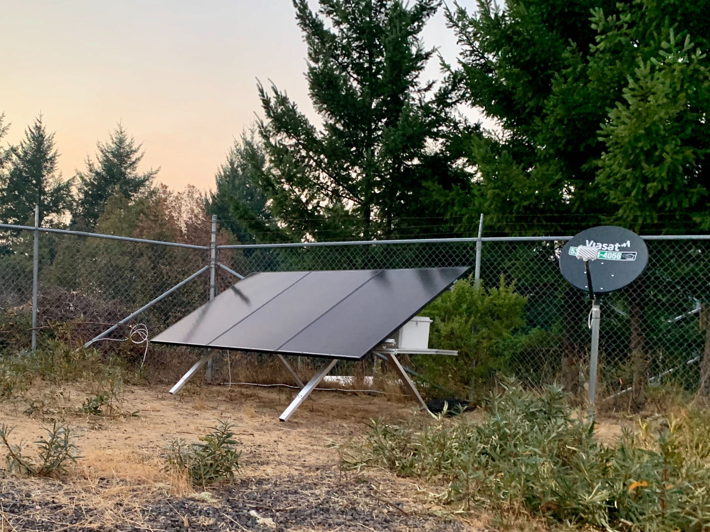
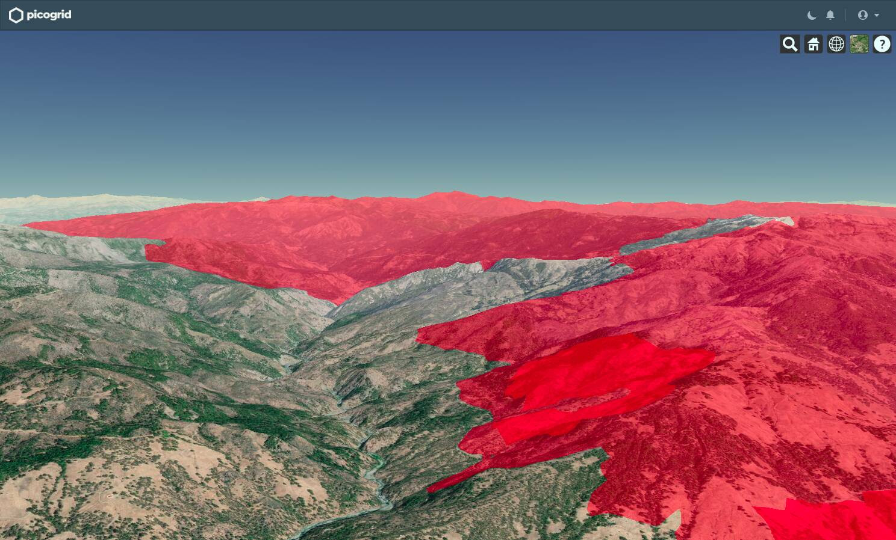

Every year, wildfires cause billions in damage and economic loss in California. The problem is growing throughout the Western US and around the world as rain patterns shift with climate change.
Picogrid's technology makes it possible to identify and track wildfires in real time, minimizing wildfire damage and reducing strain on firefighting resources.
Picogrid installs hardware on the front line of California's wildfire crisis
In late September, we deployed our technology to Mendocino county, the front line of California's wildfire crisis. The unit is part of a pilot for the largest wildfire monitoring network in the US, ALERTWildfire, in partnership with CAL FIRE.

The installation joins a network of hundreds of wildfire cameras helping fire professionals detect and track wildfires across the Western US. See the camera's live stream here.
Our technology makes it possible to fill in blind spots in ALERTWildfire's network caused by the lack of power, connectivity, or both throughout much of our nation's wildlands. Fires that break out in these remote areas often burn for hours before they are detected by satellites with limited detection resolutions.
Recent studies have shown that ground-based cameras can identify fires within just minutes of ignition, giving firefighters a better chance of putting out the fire before it grows out of control.
Wildfires are a growing problem throughout the Western US causing billions in damage each year, but the technology to identify, track, and fight them hasn't progressed in decades. Where public funding has fallen short, private industry has recently stepped in to fill firefighting funding gaps, opening up the space to new innovations, including ours. ALERTWildfire's Graham Kent explains more in a recent CNBC feature.
Announcing the private alpha of Orion, our analytics platform
As we roll out field hardware, we continue to build out our analytics platform, Orion. Orion fuses data collected in the field with other private and public sources to generate a real-time view in 3D.
The platform gives its users a full operational overview into the huge areas they are trusted to monitor and defend.
For firefighters, this means unifying information including official fire line information from headquarters, wind patters, and wildfire cameras into a single interface. Orion fuses the data into a single operational overview of field conditions in 3D.

Above is a screenshot from our platform as we track the progress of the August Complex Fire, now the largest fire in California history, in real time.
Orion is currently in private alpha and we'll be announcing more soon.